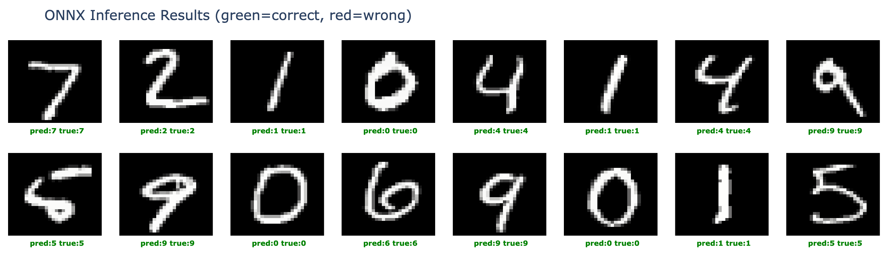
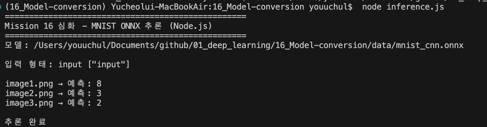

1. 미션 요약
ONNX 추론 정확도
99.09%
기준 95% 이상 ✓ 달성
변환 포맷 수
3종
.pth / 양자화 .pth / .onnx
Node.js 추론 대상
3장
image1→8, image2→3, image3→2
MNIST 데이터셋(60,000장)으로 학습한 CNN 모델을 PyTorch state_dict, quantize_dynamic(INT8), torch.onnx.export(opset 11)으로 변환·저장. Python onnxruntime으로 정확도를 검증하고, 심화 미션으로 Node.js 환경에서 onnxruntime-node + jimp를 이용해 이미지 3장 추론을 완료.
2. 추출된 모델 파일 및 용량
| 포맷 | 파일명 | 용량 | 크기 비교 | 설명 |
|---|---|---|---|---|
| PyTorch | mission_16_mnist_cnn.pth | 1.61 MB 1,690,307 bytes |
PyTorch state_dict 저장 — 기본 float32 가중치 | |
| 양자화 | mission_16_mnist_cnn_quantized.pth | 472 KB 483,869 bytes |
quantize_dynamic INT8 — FC 레이어 양자화, 71% 절감 | |
| ONNX | mission_16_mnist_cnn.onnx | 14.2 KB 14,590 bytes |
ONNX 그래프 구조 파일 (opset 11) | |
| ONNX data | mission_16_mnist_cnn.onnx.data | 1.66 MB 1,736,704 bytes |
ONNX external data 파일 — 가중치 분리 저장 (대형 모델 대비 호환) |
* ONNX 모델 실질 용량 = .onnx + .onnx.data ≈ 1.68 MB | 양자화 효과: 1.61 MB → 472 KB (약 71% 감소)
3. 기본 미션 — Python ONNX 추론 검증
ONNX 모델 추론 결과
총 10,000장 중 9,909장 정답
정확도: 0.9909 (99.09%)
✓ 95% 이상 달성
📊 inference.ipynb — ONNX 추론 샘플 시각화 (green=correct, red=wrong)

4. 심화 미션 — Node.js ONNX 추론 결과
Python 없이 JavaScript (Node.js) 환경에서 ONNX 모델을 직접 로드하여 추론. onnxruntime-node + jimp v0.22.x를 사용, PNG 이미지를 Float32Array → NCHW 텐서로 변환 후 argmax로 예측 레이블 출력.
| 이미지 | 예측 결과 | 처리 파이프라인 |
|---|---|---|
| image1.png | 8 | PNG → resize(28×28) → grayscale → Float32Array[784] → Tensor[1,1,28,28] → argmax |
| image2.png | 3 | PNG → resize(28×28) → grayscale → Float32Array[784] → Tensor[1,1,28,28] → argmax |
| image3.png | 2 | PNG → resize(28×28) → grayscale → Float32Array[784] → Tensor[1,1,28,28] → argmax |
💻 터미널 —
node inference.js 실행 결과

5. 디버깅 및 오류 해결 과정
1
data/models/ gitignore로 인한 모델 파일 미추적 문제해결됨
문제 상황
.gitignore에 data/models/가 등록되어 있어,
학습 후 생성된 .pth / .onnx 파일들이
git 추적 대상에서 제외됨. git status에서 모델 파일이 보이지 않아 발견.
원인
대용량 데이터 제외 목적의 gitignore 설정이 모델 파일에도 적용됨.
원래 의도는 data/mnist_data/(MNIST 원본 데이터, ~11MB)만 제외였으나,
모델 파일이 같은 data/ 하위에 생성되어 함께 무시됨.
해결 방법
.gitignore에서 data/models/ 라인 제거.
data/mnist_data/는 유지(대용량 데이터셋). 이후 모델 3종 정상 추적 확인.
# 수정 후 .gitignore
node_modules/
data/mnist_data/ ← MNIST 원본 데이터 (유지)
__pycache__/
.ipynb_checkpoints/
*.pyc
.DS_Store
.venv/
ai_history/code_insights/ ← 개인 학습 노트 (신규 추가)
2
git add 시 gitignore 파일이 스테이징된 문제해결됨
문제 상황
git add 16_Model-conversion/ 실행 시,
ai_history/code_insights/NodeJS_ONNX_Inference.md가
gitignore 설정에도 불구하고 스테이징 영역에 포함됨.
비공개 학습 노트가 원격 저장소에 노출될 뻔한 상황.
원인
git의 gitignore 동작 원리: git add로 경로를 명시하면
gitignore 규칙이 우회됨 (git은 명시적 추가를 우선). 새로 생성된 파일에도 동일하게 적용.
해결 방법
git restore --staged 16_Model-conversion/ai_history/code_insights/ 로 스테이징 취소.
이후 해당 경로를 제외하고 커밋 진행.
# 스테이징 취소 명령
git restore --staged 16_Model-conversion/ai_history/code_insights/
# 확인
git status
→ ai_history/code_insights/ 제거 완료 ✓
3
jimp v1.x vs v0.22.x ESM/CommonJS 호환성 문제사전 방지
문제 상황
Node.js 환경에서 CommonJS(require()) 방식으로 작성한 코드에서
jimp를 최신 버전으로 설치하면 다음 오류 발생 가능:
Error [ERR_REQUIRE_ESM]: require() of ES Module not supported
원인
jimp v1.x는 ESM(ES Modules) 전용으로 변경됨.
require()와 호환되지 않으며 import 문법과 함께 사용해야 함.
반면 onnxruntime-node는 CommonJS 방식으로 동작.
해결 방법
package.json에 "jimp": "^0.22.12"로 버전 고정.
v0.22.x는 CommonJS require() 완전 지원.
# package.json 의존성
"dependencies": {
"jimp": "^0.22.12", ← CommonJS 호환 버전 고정
"onnxruntime-node": "^1.24.3"
}
# v1.x 사용 시 오류 예시
Error [ERR_REQUIRE_ESM]: require() of ES Module
.../jimp/dist/index.js not supported
6. 생성 및 수정 파일 목록
-
modeling.ipynbMNIST CNN 학습 + 3종 포맷 변환 (기본 미션 1)
-
inference.ipynbPython ONNX 추론 정확도 검증 — 99.09% 달성 (기본 미션 2)
-
inference.jsNode.js ONNX 추론 스크립트 — onnxruntime-node + jimp (심화 미션)
-
data/models/mission_16_mnist_cnn.pthPyTorch state_dict 저장 모델 (1.61 MB)
-
data/models/mission_16_mnist_cnn_quantized.pth양자화 모델 INT8 — FC 레이어 (472 KB, 71% 절감)
-
data/models/mission_16_mnist_cnn.onnx (+.onnx.data)ONNX 변환 모델 opset 11 (총 ~1.68 MB)
-
.gitignoredata/models/ 제거 (모델 파일 추적), ai_history/code_insights/ 추가 (개인 노트 제외)
-
study-notes/NodeJS_JavaScript.mdNode.js/JS 기초 개념 + 프로젝트 코드 패턴 (신규)
-
README.md폴더 구조·실행 순서·모델 파일·학습노트 최종 정리